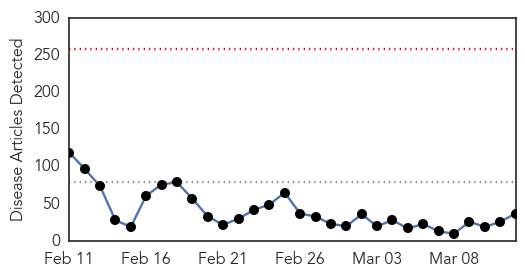
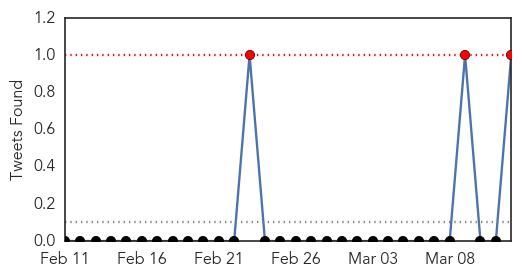
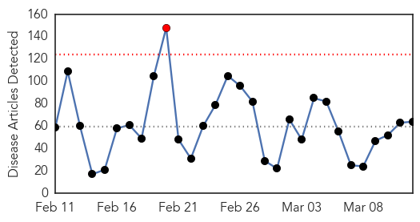
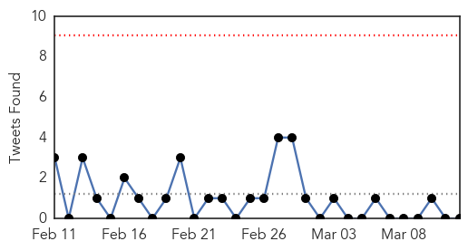

Measles
30-Day Web Trend
0 alerts, 0 warnings

30-Day Twitter Trend
3 alerts, 0 warnings

Article Locations

Article Confidences

Top Articles:
- 1.000
- Why measles could be worse for West Africa than Ebola
- 1.000
- Ebola Crisis Could Fuel Measles Outbreak in West Africa
- 1.000
- Measles Could Cause More Deaths Than Ebola In West Africa
- 0.999
- Countries Reeling From Ebola Are Facing A Big Measles Threat
- 0.998
- Ebola-sapped West African countries now face serious measles risk
- 0.994
- Plummeting vaccination rates mean measles could kill more than Ebola in affected countries
- 0.985
- Berlin counts 254 new cases of measles in 2015
- 0.977
- Measles outbreak in Niagara is over
- 0.973
- Measles cases predicted to almost double in Ebola epidemic countries
- 0.964
- Rise in measles cases predicted in Ebola-stricken areas
- 0.957
- 119 Confirmed Measles Cases in Quebec
- 0.950
- Confirmed measles cases offer vaccination reminder
- 0.936
- Publishing Local News and Entertainment for over 29 years in San Luis Obispo County, CA
- 0.933
- Health officials say 119 measles cases in Quebec
- 0.932
- Kyrgyzstan Kyrgyzstan: Bishkek Hopes it Has Passed Peak Measles
- 0.901
- Experts discuss the myths and misinformation surrounding vaccinations
- 0.890
- Doctor stresses vaccination safety
- 0.882
- Quebec rushes to vaccinate against measles in Joliette
- 0.878
- German biologist who denies measles virus exists ordered to pay
- 0.874
- Should we withhold child benefits from those who don't vaccinate?
- 0.869
- Delay vaccines for children? - IronMountainDailyNews.com
- 0.867
- Quebec rushes to vaccinate against measles in Joliette
- 0.857
- Measles kill toddler as Berlin school closes
- 0.853
- German biologist who denies measles virus exists ordered to pay
- 0.847
- Low vaccination rates could be improved by national registry: N.S. public health official - Halifax
- 0.841
- Aliso Niguel High School
- 0.839
- Medical Tyranny in Action in Oregon
- 0.828
- Africa overtaking US in the race against measles
- 0.828
- Tell lawmakers vaccines work
- 0.784
- View from QCA: Vaccinations safe, effective
- 0.721
- The Financial Gazette – Zimbabwe News
- 0.709
- Number of measles cases in Quebec jumps to 119 in region northeast of Montreal
- 0.678
- Measles Outbreak, Mandatory Vaccines in California: Doctors Bob Sears, Jay Gordon Counter Dr. Pan’s SB 277 on Public Radio
- 0.664
- CJAD 800 – News. Talk. Radio. :: Docs to Joliette students: get measles shot or stay home :: News
- 0.609
- Infant death sparks measles jab debate
- 0.574
- Alberta Liberal leader calls for mandatory vaccinations among kids in schools
- 0.540
- 5 Ways Obamacare Promotes Childhood Immunization and Vaccines?
Top Tweets:
- 0.680
- Very few people (about 3 out of 100) who get 2 doses measles vaccine still get measles if exposed to the virus.
Unknown
30-Day Web Trend
1 alerts, 0 warnings

30-Day Twitter Trend
0 alerts, 0 warnings

Article Locations

Article Confidences

Top Articles:
- 0.969
- Mutating H7N9 bird flu may pose pandemic threat, scientists warn
- 0.967
- Mutating H7N9 bird flu may pose pandemic threat, scientists warn
- 0.962
- Mutating H7N9 bird flu may pose pandemic threat, scientists warn
- 0.958
- Mutating H7N9 bird flu may pose pandemic threat
- 0.926
- Bird flu hits U.S. turkeys, H7N9 spreads in China
- 0.917
- Chicago Tribune
- 0.917
- Chicago Tribune
- 0.917
- Chicago Tribune
- 0.917
- Chicago Tribune
- 0.917
- Chicago Tribune
- 0.917
- Chicago Tribune
- 0.917
- Chicago Tribune
- 0.917
- Chicago Tribune
- 0.917
- Chicago Tribune
- 0.917
- Chicago Tribune
- 0.917
- Chicago Tribune
- 0.917
- Chicago Tribune
- 0.917
- Chicago Tribune
- 0.917
- Chicago Tribune
- 0.917
- Chicago Tribune
- 0.917
- Chicago Tribune
- 0.917
- Chicago Tribune
- 0.917
- Chicago Tribune
- 0.917
- Chicago Tribune
- 0.917
- Chicago Tribune
- 0.917
- Chicago Tribune
- 0.910
- The world windows to Thailand
- 0.875
- Ross River outbreak fears become reality
- 0.867
- Young VA ice machine had low level of Legionnaires' bacteria, VA says
- 0.855
- Director: HFMD outbreak declared in Sarawak – BorneoPost Online
- 0.823
- Chicken pox reported at Shippensburg school
- 0.817
- Killer virus ravages kids in Muzaffarpur
- 0.812
- Toronto at centre of dramatic rise of gonorrhea in Ontario
- 0.811
- Worker at New Orleans monkey lab exposed to dangerous bacteria
- 0.778
- Bacterial Enteric Infections Detected by Culture-Independent Diagnostic Tests — FoodNet, United States, 2012–2014
- 0.761
- Why is drinking water important? How much water should you drink?
- 0.744
- Military joins fight to contain typhoid
- 0.741
- Botched up sterilisations claim 14 lives in Bihar
- 0.735
- Five Queenslanders a week tested for exotic diseases after receiving bites from animals while overseas
- 0.726
- Daily Express Newspaper Online, Sabah, Malaysia.
- 0.705
- Chinese medicine gets WHO recognition
- 0.704
- FBC News
- 0.693
- Kalispell hospital investigates confirmed case of tuberculosis
- 0.693
- State Records Sharp Increase In HFMD Cases
- 0.672
- if you don’t stop it, you can go blind
- 0.648
- Doctors encourage more children to get HPV vaccine
- 0.644
- Worker at Tulane primate center exposed to bioterror bacteria
- 0.619
- Change of season sees rise in viral fever cases in Indore
- 0.610
- Boil-Water Alert Issued For Quitman County
- 0.606
- Lab employee tests positive for deadly bacteria that escaped primate research facility
Showing top 50 articles...
Top Tweets:
-
No tweets found for Mar 12, 2015